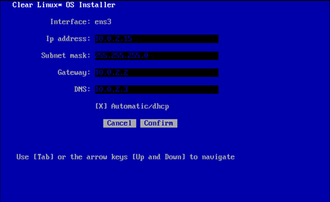
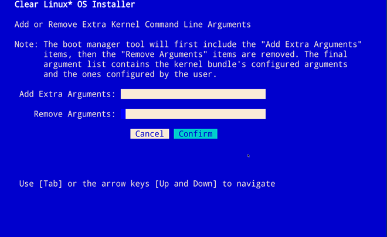
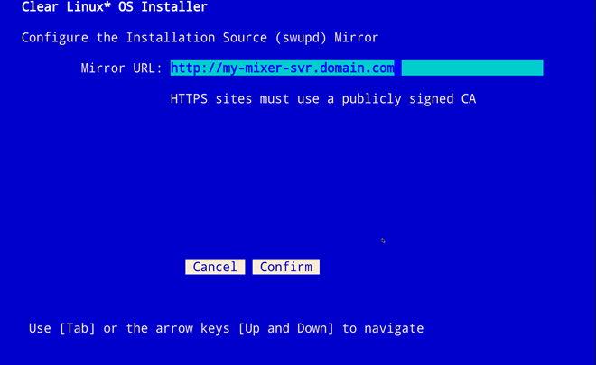
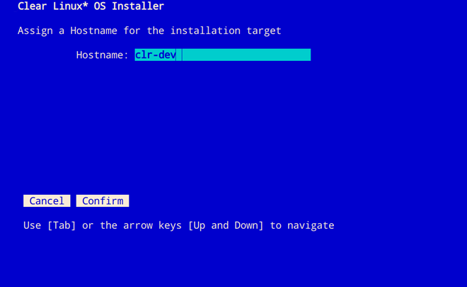

使用实时服务器将 Clear Linux* OS 安装在裸机上¶
本页介绍如何使用实时服务器映像从可引导 USB 驱动器将 Clear Linux* OS 安装到裸机上。
下载最新的 Clear Linux OS 实时服务器映像¶
从 Downloads 页面获取最新的 Clear Linux OS 安装程序映像。查找 clear-[version number]-live-server.iso 文件。
- 确认该文件是否适合您的操作系统，然后解压缩。
- 按照操作系统说明创建一个可引导的 USB 驱动器。
在目标系统上安装 Clear Linux OS¶
确保您的系统已配置为引导 UEFI。下述安装方法需要通过有线 Internet 连接与 DHCP 服务器通信。
注解
或者，您也可以首先使用 nmtui，然后通过无线连接安装 Clear Linux OS。按照图 2 所示的 nmtui 说明执行操作。
按照以下步骤在目标系统上安装 Clear Linux OS：
将 USB 驱动器插入可用的 USB 插槽。
打开系统电源。
按 F2 键打开系统 BIOS 设置菜单。您的 BIOS 设置菜单入口点可能会有所不同。
注解
Clear Linux OS 支持 UEFI 引导。某些硬件可能会列出 UEFI 和非 UEFI USB 引导条目。在这种情况下，您应该选择 UEFI 引导选项。
在设置菜单中，启用 UEFI 引导，并在设备引导顺序中将 USB 驱动器设置为第一个选项。
保存这些设置并退出。
重新引导目标系统。
此操作会启动 Clear Linux OS 安装程序引导菜单，如图 1 所示。

图 1：Clear Linux OS 安装程序引导菜单
在 Clear Linux OS 高亮显示的情况下，选择 Enter。
启动 Clear Linux OS 安装程序¶
在 login 提示符下，输入 root。
如图 2 所示，按照屏幕说明执行操作，并输入临时密码。

图 2：root 登录
在 root 提示符下，输入 clr-installer，然后按 Enter。

图 3：clr-installer 命令
最低安装要求¶
要满足最低安装要求，请填写 Required options。我们建议您选择 Recommended options （非必选）。Advanced options 为可选项 。
注解
- 仅当填写 Required options 后才会高亮显示 安装 按钮。
主菜单¶
出现 Clear Linux OS 安装程序“Main Menu”，如图 4 所示。

图 4：Clear Linux OS 安装程序
Clear Linux OS 安装程序“Main Menu”有两个选项卡，即 [R] Required options 和 [A] Advanced options。使用以下快捷键可在这两个选项卡之间切换：
- 使用 Shift+A 可切换到 [A] Advanced options
- 使用 Shift+R 可切换到 [R] Required options
要满足最低要求，请在 Required options 中输入您的设置。确认后，您选择的设置会出现在菜单选项下的 >> 标志旁边。
必填选项¶
选择时区¶
- 从“Main Menu”中，导航到 Choose Timezone。默认情况下会选择 UTC。
- 选择 Enter。
- 在 Select System Timezone 中，使用 向上/向下 箭头可导航到所需时区。
按 Enter 进行确认。

图 5：选择系统时区
选择语言¶
从“Main Menu”中，导航到 Choose Language。
选择 Enter。
在 Select System Language 中，导航到所需的语言。
按 Enter 进行确认。
配置键盘¶
从“Main Menu”中，选择 Configure the Keyboard。
选择 Enter。
在 Select Keyboard 中，导航到所需的选项。
选择 Enter 进行 确认。
可选：在 Test keyboard 中，键入文本以确保按键映射到您的键盘。

图 7：选择键盘菜单
配置安装媒介¶
从“Main Menu”中，选择 Configure Installation Media。
选择安装方法： * Safe Installation * Destructive Installation * Advanced Configuration
选择 Rescan Media 显示可用的安装目标。
安全安装¶
使用此方法可将 Clear Linux OS 安全地安装在具有可用空间的媒介上，或者将其与现有分区安装在一起，并接受 Default partition schema。如果有足够的可用空间，则可以执行安全安装。另请参阅下面的 Troubleshooting。
破坏性安装¶
使用此方法会销毁目标设备上的内容，在目标设备上安装 Clear Linux OS 并接受 Default partition schema。
注解
从 Select Installation Media 菜单中，选择 Enable Encryption 对上述任一选项的根文件系统进行加密。有关详细信息，另请参阅 Disk encryption。
高级配置¶
使用此方法可手动配置分区。这些分区必须符合 Default partition schema。您也可以在配置每个分区时选择 Disk encryption。
注解
Advanced Configuration 在 1.2.0 和更高版本安装程序中可用。
如上图 8 所示，从 Select Installation Media 中，选择 Advanced Configuration。
在 Advanced Configuration 中，导航到
/dev/sda，然后按 Enter。
图 9：高级配置菜单
选择一种分区方法：
- Auto Partition 选择此选项会接受 Default partition schema。
- 导航到并按下 Confirm。
- 继续安装配置。跳到 Telemetry。
- 下面继续介绍 Manual Partition。
- Auto Partition 选择此选项会接受 Default partition schema。
手动分区¶
下面我们提供一个简单的例子。
导航到未分配的媒介（例如 /dev/sda），直到其高亮显示，如图 9 所示。
按 Enter 编辑该分区。
出现 Partition Setup 菜单，如图 10 所示。
注解
添加第一个分区后，选择 Free Space 添加另一个分区。
根分区¶
如图 10 所示，现在配置 root 分区。root 分区的配置各不相同。
导航到 Add，然后按 Enter。
引导分区¶
如图 11 所示，现在配置 boot 分区。
导航到 Add，然后按 Enter。

磁盘加密¶
为了进一步增强安全，支持使用 LUKS 对 Clear Linux OS 上除 /boot 以外的任何分区进行磁盘加密。要加密根分区，请参阅下面的示例。加密是可选的。
推荐选项¶
设置完 Required options 后，我们强烈建议您至少要设置这些选定的 Advanced options：
跳到完成安装界面¶
设置完所有 Required options 后，您可以跳到 Finish installation。
当然，您也可继续完成以下设置。在“Main Menu”中，选择 Advanced options 执行附加配置。
高级选项¶
配置网络接口¶
默认情况下，Clear Linux OS 配置为使用 DHCP 自动检测主机网络接口。但是，如果要使用静态 IP 地址，或者如果网络上没有 DHCP 服务器，请按照以下说明手动配置网络接口。否则，系统将自动应用默认网络接口设置。
注解
如果 DHCP 可用，可能不需要由用户选择这些设置。
导航到 Configure Network Interfaces，然后选择 Enter。
导航到希望更改的网络 interface。
当所需的 interface 高亮显示时，选择 Enter 进行编辑。
注解
可能会出现多个网络接口。

图 17：配置网络接口
注意：默认情况下会选择 Automatic / dhcp （位于底部）。
可选：导航到 Automatic / dhcp 复选框，然后按 空格键 取消选择现有设置。
图 18：网络接口配置
导航到适当的字段，并分配所需的网络配置。
要保存设置，请导航到 Confirm，然后选择 Enter。
注解
要恢复以前的设置，请导航到 Cancel，然后选择 Enter。
确认网络配置后，将出现 Testing Networking 对话框。确保结果显示测试成功。如果测试失败，则不会保存您所做的更改。
确认后，您将返回到 Network interface 设置。
导航到并选择 Main Menu。
可选：跳到 Finish installation。
代理¶
如 Autoproxy 中所述，Clear Linux OS 会自动尝试检测代理设置。如果需要手动分配代理设置，请按照以下说明操作。
从“高级选项”菜单中，导航到 Proxy，并选择 Enter。
导航到 HTTPS Proxy 字段。

图 19：配置网络代理
使用常规语法（例如 http://address:port）输入所需的代理地址和端口。
导航到 Confirm，然后选择 Enter。
要恢复以前的设置，请导航到 Cancel，然后选择 Cancel。
可选：跳到 Finish installation。
测试网络设置¶
要在安装 Clear Linux OS 之前手动确保网络连通，请选择 Test Network Settings，然后选择 Enter。
出现一个进度条，如图 20 所示。
注解
对网络设置所做的任何更改都会在配置过程中自动测试。
可选：跳到 Finish installation。
捆绑包选择¶
在“Advanced”菜单中，选择 Bundle Selection
使用 Tab 或 向上/向下 箭头导航到所需的捆绑包。
按 空格键 选择所需的每个捆绑包对应的复选框。

图 21：捆绑包选择
可选：要开始使用 Clear Linux OS 开展开发工作，我们建议添加
os-clr-on-clr。导航到并选择 确认。
您将返回到 Advanced options 菜单。
可选：跳到 Finish installation。
管理用户¶
添加新用户¶
在“高级选项”中，选择 Manage User。
选择 Add New User，如图 22 所示。

图 22：添加新用户
可选：输入一个 User Name。
输入一个 Login。
注解
用户登录名必须是字母数字字符，并且可以包括连字符和下划线。最大长度为 31 个字符。
输入一个 Password。
在 Confirm 中，输入相同的密码。
可选：导航到 Administrative 复选框，然后按 空格键 为用户分配管理权限。
注解
选择此选项将为用户启用 sudo 特权。
选择 确认。
注解
如果需要，选择 Reset 来重置表单。
在 Manage User 中，导航到 Confirm。
在 Confirm 高亮显示的情况下，选择 Enter。
修改/删除用户¶
在 Manage User 中，导航到要修改的用户，直到其高亮显示，如图 24 所示。
选择 Enter 修改该用户。
根据需要修改用户详细信息。
导航到 确认，直到其高亮显示。
注解
可选：选择 Reset 可重置表单。
选择 Confirm 保存所做的更改。
可选：在 Modify User 中，要删除用户，请导航到 Delete 按钮，然后选择 Enter。

图 25：删除用户
您将返回到 Manage User。
- 导航到 确认，直到其高亮显示。
- 选择 Enter 设置 Manage User 选项。
可选：跳到 Finish installation。
内核命令行¶
Clear Linux OS 为高级用户提供了添加或移除内核参数的功能。如果要附加一个新参数，请在此处输入该参数。每当安装或更新新内核时，都会使用此参数。
在“高级选项”中，选择 Tab 高亮显示 Kernel Command Line。
选择 Enter。
图 26：内核命令行
从下列选项中选择。
- 要添加参数，请在 Add Extra Arguments 中输入参数。
- 要移除参数，请在 Remove Arguments 中输入参数。
选择 确认。
可选：跳到 Finish installation。
内核选择¶
选择一个内核选项。默认情况下会选择最新的内核版本。图 27 中显示了原生内核。
要选择不同的内核，请使用 Tab 导航到该内核。

图 27：内核选择
按 空格键 选择所需的选项。
导航到 确认，然后选择 Enter。
可选：跳到 Finish installation。
Swupd 镜像¶
如果拥有自己的自定义 Clear Linux OS 镜像，您可以添加它的 URL。
在“高级选项”中，选择 Swupd Mirror。
要添加本地 swupd 镜像，请在 Mirror URL: 中输入有效的 URL
选择 确认。
图 28：Swupd 镜像
可选：跳到 Finish installation。
分配主机名¶
在“高级选项”中，选择 Assign Hostname。
在 Hostname 中，仅输入主机名（不包括域）。
注解
主机名不允许有空格。主机名必须以字母数字字符开头，但也可以包含连字符。最大长度为 63 个字符。
图 29：分配主机名
导航到 确认，直到其高亮显示。
选择 确认。
可选：跳到 Finish installation。
自动更新操作系统¶
默认情况下会启用操作系统自动更新。在极少数情况下，您可能需要禁用自动软件更新，这时可按照屏幕说明进行操作，如图 30 所示。
在“高级选项”中，选择 Automatic OS Updates。
选择所需选项。
您将返回到 Main Menu。
保存配置设置¶
在“高级选项”中，选择 Save Configuration Settings。
对话框显示安装配置已保存到
clr-installer.yaml
图 31：操作系统自动更新
使用
clr-installer.yaml文件时，可以使用相同的配置将 Clear Linux OS 安装到多个目标。

{kind=link}
{kind=link}
{kind=link}
{kind=link}
{kind=link}
{kind=link}
{kind=link}
{kind=link}
{kind=link}
{kind=link}
{kind=link}
{kind=link}
{kind=link}
{kind=link}
{kind=link}
{kind=link}